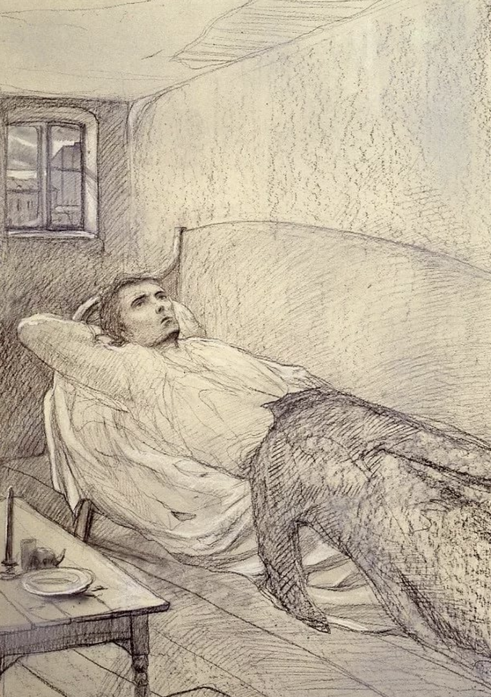

Crime and Punishment. Part I notes

Fig. 1. Raskolnikov in his room (artist Ilya Glazunov 1982).
- chapter 1
R lives in the closet, cupboard under the roof of a five-storied house (3)
ill hypochondria (3)
- chapter 2
Marmeladov's confession (pp. 15-24): man is a scoundrel, need to repent but this man will be saved by our Lord
Marmeladov has a family despite being a scoundrel. R is alone
R leaves money for M's family even though he has no money himself (moved by M's confession) (27)
R: his theory man is not a scoundrel (God himself) and does not need God as a barrier against crime (27).
- Chapter 3
Mother's letter to Rodya (confession) (30-39)
about Svidrigailov's harassment
about Dunya selling herself for Rodya (60 rubles instead of 30 rubles for Sonia)
R cries: R's face was wet with tears (41).
- Chapter 4
R compares Sonia to Dunia
R sees a drunk girl and gives 20 kopecks to a policeman to save her to escape a rapist, then changes his mind (schism: reason wins over his love) (48)
goes to Vasilyevsky Island to Razumikhin (a sociable and simlistic fellow (52)), lives on the rooftop (52)
- Chapter 5
Longing for Razumikhin but getting a terrible dream
Dream 1 about killing a horse (54-59)
It’s a foreshadowing, a rehearsal of Raskolnikov’s crime,
played out in his dreams before he commits it.
Each figure (the mare, Mikolka, the crowd, the child)
externalizes part of his inner split —
compassion vs. cruelty, conscience vs. ideology.
The dream questions his theory:
his heart will not allow him to live with the reality of violence.
Eavesdropping: R overhears at the Haymarket
that Lizaveta will be absent in the apartment at 7PM tomorrow.
-
Chapter 6
axe not as planned from the kitchen, from caretaker's closet
dream #3 city planning: St. Petersburg
"his reason was clouded" (74)
-
Chapter 7
door is open while R is murdering people, a failure of reason
Everything is happening by chance or "as if by design" (85)
after the murders, "He met no one, not a single soul" (86)